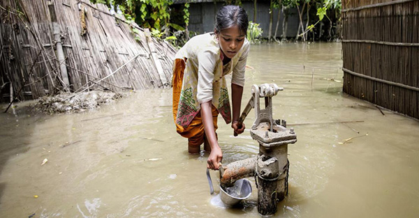
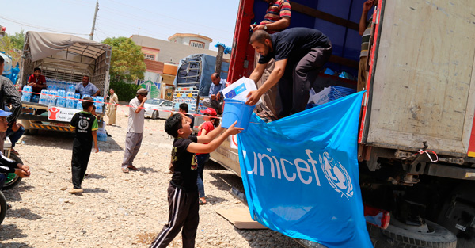
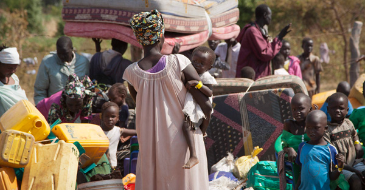
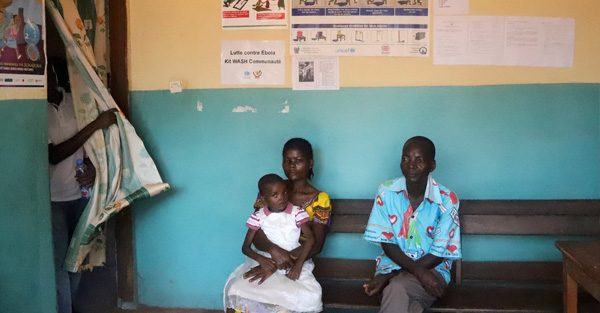
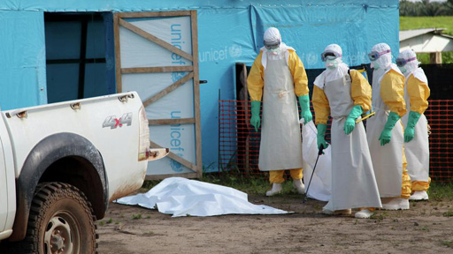
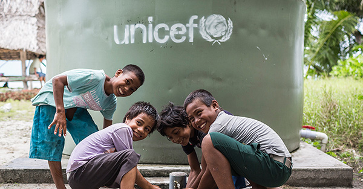
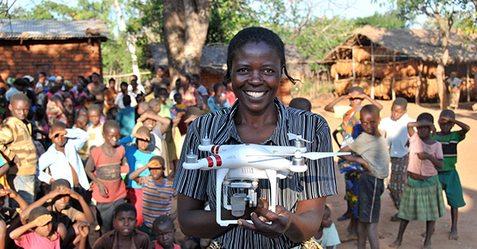
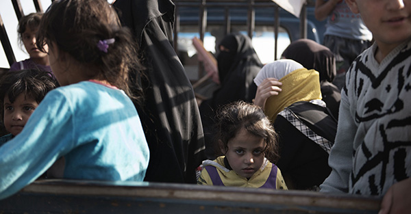
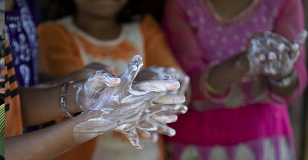

기관활동
issue
-
환경과 기후변화
기후 변화는 어린이의 생존,성장 등 삶의 전반에 직접적인 위협니 됩니다.
기후변화에 가장 책임이 없는 어린이가 피해를 오롯이 떠안게 됩니다.
이 시대를 살아가는 어린이는 기후위기로 더 위험하고 불확실한 세상에 놓여 있습니다.
-
이노베이션
유니세프는 '이노베이션 프로젝트'라는 새로운 접근법을 시도합니다.
새로운 접근법과 파트너십을 활용한 기술 혁신은 어린이 권리를 실현하고 삶의 질을 높이는데 중요한 역할을 합니다.
우리는 빈부 격차, 급속한 도시화, 기후변화 및 빠른 기술 변화 등의 문제에 새로운 해결 방법을 찾아야 합니다.
-
난민 어린이
전 세계는 현재 제2차 세계대전 이후 전례 없는 난민 증가로 인해, 6,000여만 명의 난민과 국내실향민 등 강제 이주민이 발생하였습니다.
난민 용어 정의
- 이주민
- 사람의 법적 지위, 자발적 또는 비자발적 이동, 운동의 원인으로, 체류 기간에 상관없이 살던 곳을 벗어나 국경을 넘거나 한 국가 내에서 거주지를 옮긴 사람을 광범위하게 일컫는 용어
- 난민
- 전쟁이나 재난에 의한 곤경이나, 인종, 종교 또는 정치적, 사상적 차이로 인한 박해로 인해 출신국가에서 외국이나 다른 지방으로 탈출하여 다른 나라의 입국이 허가되었거나 비호 신청을 한 사람
- 국내실향민
- 자신의 집 또는 일상적 거주지에서 강제적 또는 의무적으로 도피하거나 떠나게 된 자를 의미합니다. 국내실향민은 난민과 달리 자국에 머물러 있는 사람
-
에볼라
에볼라 바이러스는 끈질기고 파괴적입니다.
에볼라(Ebola)는 성인뿐 아니라 어린이에게 더욱 무서운 질병입니다.
에볼라에 감염됐다는 낙인은 이미 엄청난 어려움과 상실을 겪은 어린이를 고립시킵니다. 이같은 정서적 상처가 치유되기까지 몇 년이 걸리기도 합니다.
-
코로나 19
2020년 초부터 코로나19가 전 세계에 급속도로 확산되면서, 많은 사람들이 자신은 물론 소중한 이들을 지키기 위해 예방조치를 취하고 바이러스 예방을 위한 정보를 적극 공유하고 있습니다.
코로나 19에 대하여
- 코로나19 바이러스란?
- 2019년 코로나 바이러스 감염증(코로나19)은 심각한 급성 호흡기 증후군인 사스와 같은 류의 바이러스이며 일반적인 감기와 관련이 있는 신종 바이러스입니다.
- 어린이에게 영향이 있나요?
- 신종 바이러스이기 때문에 아직은 어린이나 임산부에 어떤 영향을 미치는지 충분히 밝혀지지는 않았습니다. 이 바이러스는 기저질환자와 고연령대에 주로 발생했지만 최근 들어서는 전 연령으로 확산되고 있습니다.
-
환경과 기후변화
어린이 보호 대응 방안
- 수자원 관리 시스템 지원
- 학교의 지속가능한 에너지 사용과 재난 위험 대응
- 보건 시설의 지속가능한 에너지 사용과 재난 위험 대응
-
이노베이션
이노베이션 프로젝트
- 생명을 구하는 배달, 드론
- 새로운 기금 방식 ‘크립토펀드(Cryptocurrency Fund)’
- 실시간 정보를 다루는 ‘래피드프로(RapidPro)’
-
난민 어린이
난민어린이 보호
- 시리아 어린이에게 소아마비 예방접종
- 시리아, 요르단, 레바논등 급수 시스템 개선
- 어린이 2백만 여명에게 보건 시설 제공
-
에볼라

퇴치를 위한 노력
- 지역 사회와 교류 확대
- 신체·정신 건강 지원
- 다른 질병으로부터 보호
- 학교 대상 예방 수칙 홍보
- 인접 국가의 에볼라 대비 지원
-
코로나 19
코로나 19 주요전략
- 전염과 사망률을 줄이기 위한 공중 보건 대응
- 지속적인 보건·교육·사회 서비스 이용 지원